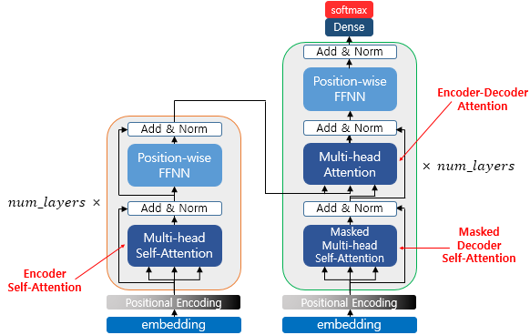

영어 전용 바닐라 트랜스포머였던 GuppyLM을 (1) 한국어를 말할 수 있게 만들고, (2) 밀집(dense) FFN을 전문가 4개 · top-2 라우팅의 MoE로 바꿉니다. 데이터 구축부터 평가까지, 각 단계가 무엇 때문에 어떻게 바뀌는지 코드와 함께 설명합니다.
🐟 직접 따라 해보려면 → tutorial.html (명령어 따라하기)두 가지 축이 동시에 바뀝니다. 언어(영어 → 한·영 이중언어)와 FFN 구조(dense → MoE). 이 둘은 서로 맞물립니다: MoE의 전문가들이 학습 중에 언어별로 자연스럽게 분화하는지를 평가 단계에서 관찰하는 것이 이 프로젝트의 하이라이트입니다.
lang 필드 추가| 파일 | 변경 | 핵심 |
|---|---|---|
config.py | 수정 | use_moe, n_experts=4, moe_top_k=2, aux_loss_coef 추가 · vocab_size 8192 |
model.py | 수정 | Expert, MoEFFN 신설 · 블록이 dense/MoE 선택 · forward가 aux loss 합산 |
generate_data_ko.py | 신규 | 60주제 한국어 생성기 (KO_GENERATORS) |
generate_data.py | 수정 | 한·영 50:50 결합 · lang 기록 · 한글 깨짐 방지(ensure_ascii=False) |
prepare_data.py | 수정 | VOCAB_SIZE 8192 · 한글 round-trip 테스트 |
train.py | 수정 | loss = CE + coef·aux · CE/aux 분리 로깅 |
eval_routing.py | 신규 | 언어별 전문가 라우팅 분포 분석 (python -m guppylm route) |
eval_cases.py | 수정 | 한국어 홀드아웃 케이스 8종 추가 |
inference.py · __main__.py | 수정 | MoE config 로드 · route 명령 |
MoE를 이해하려면 먼저 바뀌지 않은 토대를 알아야 합니다. GuppyLM은 디코더 전용(decoder-only) 트랜스포머로, GPT 계열과 같은 구조입니다. 먼저 전체 골격을 한 줄로 본 뒤, 그 위에서 무엇 하나가 바뀌는지 짚겠습니다.
model.py 첫 줄 설명대로 RoPE(회전 위치 인코딩)·SwiGLU(게이트 FFN)·GQA(헤드 공유)·parallel
residual 같은 현대 기법을 모두 뺐습니다. 그래서 아키텍처에서 무엇이 바뀌었는지 한눈에 추적하기
쉽고, 바뀌는 건 정말 FFN 한 칸뿐입니다.
(이 네 기법은 아래에서 간단히 비교합니다.)| 항목 | 값 | 의미 |
|---|---|---|
d_model | 384 | 토큰 하나를 나타내는 벡터 차원(잔차 스트림 폭) |
n_layers | 6 | 블록(어텐션+FFN)을 6번 쌓음 |
n_heads | 6 | 어텐션 헤드 6개 → 헤드당 차원 384/6 = 64 |
ffn_hidden | 768 | FFN 내부 폭(= 2 × d_model) — MoE에선 전문가 1명당 이 크기 |
max_seq_len | 128 | 위치 임베딩 길이 = 한 번에 보는 최대 토큰 수 |
vocab_size | 8192 | 토큰 임베딩·LM 헤드의 행 수 한국어 위해 4096→8192 |
dropout | 0.1 | 정규화 |
참고로 "Attention Is All You Need"(2017)의 원래 트랜스포머 전체 구조입니다. 왼쪽은 인코더,
오른쪽은 디코더 스택이고, 각 스택을 num_layers번 쌓습니다.

블록 하나는 두 개의 잔차 연결로 되어 있습니다. 입력 x는 위쪽 "고속도로"로 그대로 흐르고,
아래쪽 가지에서 먼저 LayerNorm을 거친 뒤(=Pre-LN) 어텐션·FFN을 통과한 결과를 다시 더해줍니다.
FFN 칸(아래 노란 박스)이 바로 MoE로 교체되는 유일한 지점입니다.
# model.py · Block.forward — 이 5줄이 트랜스포머 블록의 전부 def forward(self, x, mask=None): x = x + self.attn(self.norm1(x), mask) # ① Pre-LN → 어텐션 → 잔차 더하기 x = x + self.ffn(self.norm2(x)) # ② Pre-LN → FFN(또는 MoE) → 잔차 더하기 return x # Block.__init__ — 단 한 줄로 dense/MoE가 갈린다 self.ffn = MoEFFN(config) if config.use_moe else FFN(config)
모델에 들어오는 건 정수 토큰 ID(예: "안녕" → 1840)뿐입니다. 신경망은 정수를 못 다루니,
먼저 이 ID를 384차원 실수 벡터로 바꿔야 합니다. 그런데 한 가지 문제가 있습니다 —
어텐션은 순서를 모릅니다(단어를 집합처럼 봄). 그래서 "이 토큰이 문장에서 몇 번째인지"를
알려주는 위치 벡터를 따로 만들어 더해 줍니다.
# model.py · GuppyLM — 임베딩은 두 개의 룩업표 self.tok_emb = nn.Embedding(config.vocab_size, config.d_model) # 8192 × 384 : ID → 단어 벡터 self.pos_emb = nn.Embedding(config.max_seq_len, config.d_model) # 128 × 384 : 자리 → 위치 벡터(학습형) # forward — 두 벡터를 '더한다'(concat 아님). 둘 다 384차원이라 그대로 합산. pos = torch.arange(T, device=idx.device) # [0,1,2,…,T-1] 자리 번호 x = self.drop(self.tok_emb(idx) + self.pos_emb(pos)) # (B,T,384) — 의미 + 위치
| 구성 | 모양 | 역할 |
|---|---|---|
토큰 임베딩 tok_emb | 8192 × 384 | 각 어휘 ID마다 학습되는 "의미 벡터" 한 줄 |
위치 임베딩 pos_emb | 128 × 384 | 0~127번째 자리마다 학습되는 "위치 벡터" 한 줄 |
| 합치는 법 | 원소별 덧셈 | 이어붙이기(concat)가 아니라 더함 → 차원이 안 늘어남 |
max_seq_len=128개
자리만 있으므로, 128토큰을 넘는 입력은 다룰 수 없습니다(그래서 generate가
idx[:, -128:]로 잘라 넣습니다). 큰 모델이 RoPE를 쓰는 이유가 이 길이 제약 때문입니다.맨 끝의 LM 헤드(384차원 → vocab 점수)는 새 행렬을 쓰지 않고 토큰 임베딩 행렬을 그대로 재사용합니다. "ID를 벡터로 바꾸는 표"와 "벡터를 ID 점수로 되돌리는 표"가 같은 가중치입니다.
# model.py · GuppyLM.__init__ self.lm_head = nn.Linear(config.d_model, config.vocab_size, bias=False) self.lm_head.weight = self.tok_emb.weight # ★ 같은 행렬을 공유(tie)
vocab×384 ≈ 3.1M 파라미터를 한 번만 쓰게 해 메모리를 아끼고,
② "들어갈 때의 의미"와 "나올 때의 의미"를 묶어 학습을 안정화합니다. 다만 이 행렬은 모델에서 가장 큰
단일 가중치라, vocab을 4096→8192로 키우면 여기가 직접 커집니다(기준선 8.7M→10.3M의 주범).어텐션은 토큰들이 서로 정보를 주고받는 곳입니다. 각 토큰이 질문(Query)을 던지고, 다른 토큰들의 열쇠(Key)와 맞춰 본 뒤, 잘 맞는 토큰의 값(Value)을 많이 가져옵니다. GuppyLM은 이걸 6개 헤드로 병렬 수행합니다 — 헤드마다 64차원씩 맡아 서로 다른 관계(문법·의미·반복 등)를 본다고 보면 됩니다.
Q·K·V는 전부 같은 입력 x에서 만들어집니다. 토큰 벡터 하나를 서로 다른 세 개의
Linear(W_q · W_k · W_v)에 통과시켜 같은 토큰을 세 관점으로 바라본 것입니다.
코드에선 셋을 한꺼번에 뽑으려고 qkv = Linear(384→1152)로 합쳐 계산한 뒤 셋으로 자릅니다
(1152 = 3 × 384).
| 이름 | 역할 (한 줄) | 검색엔진 비유 |
|---|---|---|
| Query 질문 |
"나는 지금 어떤 정보를 찾고 있나" — 현재 토큰이 알고 싶은 것 | 검색창에 친 검색어 |
| Key 색인 |
"나는 이런 정보를 갖고 있다" — 각 토큰이 자신을 알리는 색인 | 각 문서의 제목·태그 |
| Value 내용 |
"매칭되면 실제로 건넬 내용" — 가져갈 정보 본체 | 문서의 실제 본문 |
작동은 두 단계입니다. ① 현재 토큰의 Q를 모든 토큰의 K와 내적해 "얼마나 관련 있나" 점수를 내고 softmax로 가중치(합=1)로 바꿉니다. ② 그 가중치로 각 토큰의 V를 섞어(가중합) 현재 토큰의 새 표현을 만듭니다. 한마디로 "Q로 조회해, 잘 맞는 토큰의 V를 더 많이 가져온다."
x를 바로 안 쓰고 셋으로 나누나? "내가 찾는 것(Q)", "내가 내세우는 색인(K)",
"내가 건넬 내용(V)"은 서로 다른 일입니다. 각각 별도 가중치로 학습해야 매칭 기준과 전달 내용을
독립적으로 조절할 수 있습니다. 그래서 같은 토큰 벡터라도 세 갈래로 투영합니다.# model.py · Attention.forward — 한 토큰이 과거를 돌아보는 6단계 B, T, C = x.shape # C = d_model = 384 qkv = self.qkv(x) # ① Linear 384→1152, Q·K·V를 한 번에 qkv = qkv.reshape(B, T, 3, self.n_heads, self.head_dim).permute(2, 0, 3, 1, 4) q, k, v = qkv[0], qkv[1], qkv[2] # ② 6개 헤드로 분할 → 각 (B, 6, T, 64) attn = (q @ k.transpose(-2, -1)) / math.sqrt(self.head_dim) # ③ 토큰쌍 점수 (B,6,T,T) ÷ √64 attn = attn.masked_fill(mask == 0, float("-inf")) # ④ 인과 마스크: 미래 칸 = −∞ attn = self.dropout(F.softmax(attn, dim=-1)) # ⑤ 행 합=1 가중치 + dropout out = (attn @ v).transpose(1, 2).contiguous().view(B, T, C) # ⑥ v 가중합 → 헤드 합치기 return self.out(out) # 출력 Linear 384→384
| 단계 | 하는 일 | 모양 변화 |
|---|---|---|
| ① QKV 투영 | Q·K·V를 하나의 Linear로 한 번에 뽑음(행렬곱 3번 → 1번) | (B,T,384) → (B,T,1152) |
| ② 헤드 분할 | 1152를 3 × 6헤드 × 64로 쪼개 6개 병렬 어텐션 구성 | 각 (B,6,T,64) |
| ③ 점수 ÷ √64 | q·kᵀ로 모든 토큰쌍 유사도, √head_dim으로 스케일 | (B,6,T,T) |
| ④ 인과 마스크 | 미래 토큰 칸을 −∞로 채워 못 보게 막음 | 모양 유지 |
| ⑤ softmax+drop | 각 행을 확률로(합=1) → 어디를 얼마나 볼지 결정 | 모양 유지 |
| ⑥ 값 가중합 | ·v로 정보 수집 후 6헤드를 다시 384로 합쳐 출력 투영 | (B,T,384) |
원조 트랜스포머(2017, 번역용 encoder–decoder)는 같은 Q·K·V 메커니즘을 세 군데에서 씁니다. GuppyLM은 그중 두 번째 하나만 사용합니다.
참고: 모든 헤드가 자기 K·V를 따로 갖는 표준 MHA입니다(GQA로 헤드를 공유하지 않음). 위치는 ③의 점수 계산이 아니라 임베딩에서 들어오므로 RoPE도 없습니다. 이 장난감 모델은 추론 시 KV 캐시도 안 써서 매 토큰마다 전체를 다시 계산합니다(작아서 괜찮음).
어텐션이 토큰들 사이를 섞었다면, FFN은 토큰 하나하나를 더 깊이 가공합니다.
384차원을 768로 넓혔다가(up) ReLU로 비선형을 준 뒤 다시 384로 좁힙니다(down).
모든 토큰이 똑같은 MLP 하나를 통과하는 게 dense 방식입니다.
# model.py · FFN.forward — 게이트 없는 평범한 MLP (SwiGLU 아님) return self.dropout(self.down(F.relu(self.up(x)))) # 384 →(up) 768 →ReLU→(down) 384
이 "모든 토큰 = 같은 MLP"를 "토큰마다 전문가 4명 중 2명 선택"으로 바꾸는 것이 이 프로젝트의 본론입니다 → MoE란?
토큰 벡터는 6개 블록을 지나며 어텐션·FFN 결과가 잔차로 계속 더해집니다. 그냥 두면 숫자들이 점점 커지거나(폭주) 작아져(소실), 학습이 불안정해지고 기울기가 망가집니다. LayerNorm은 이걸 막는 "크기 리셋" 장치입니다 — 각 토큰 벡터를 받아 그 안의 384개 값을 평균 0·크기 1로 다시 맞춥니다.
y = γ · ( x − μ ) / √( σ² + ε ) + β
γ,β로 원하는 크기를 되살릴 수 있습니다.# model.py — LayerNorm은 d_model(=384) 차원에 대해 작동 self.norm1 = nn.LayerNorm(config.d_model) # 어텐션 앞 self.norm2 = nn.LayerNorm(config.d_model) # FFN 앞 self.norm = nn.LayerNorm(config.d_model) # 스택 끝, LM 헤드 앞 # Block.forward — 정규화는 '가지'에서, 잔차에는 정규화 안 한 원본을 더한다 (= Pre-LN) x = x + self.attn(self.norm1(x), mask) x = x + self.ffn(self.norm2(x))
x + Attn(x)를 한 뒤에 정규화 → 정규화가 잔차
"고속도로" 위에 끼어들어, 깊어질수록 위→아래 기울기 흐름이 막혀 warmup 등 세심한 튜닝이 필수였습니다.ignore_index=0으로 패딩(pad_id=0) 자리는 손실에서 제외합니다.# model.py · GuppyLM.forward (끝부분) logits = self.lm_head(self.norm(x)) # 최종 LayerNorm → LM 헤드 ce_loss = F.cross_entropy(logits.view(-1, V), targets.view(-1), ignore_index=0) loss = ce_loss + self.config.aux_loss_coef * aux_loss # dense면 aux=0
아래는 요즘 LLM이 거의 다 쓰지만 GuppyLM이 일부러 뺀 기법들입니다. 모두 "성능·효율을 위한 개선"이라 이해에는 꼭 필요하지 않아, 단순함을 위해 생략했습니다. 각 기법의 한 줄 정의와 GuppyLM의 단순 버전을 비교합니다.
| 현대 기법 | 무엇을 하나 (왜 좋나) | GuppyLM은 대신 |
|---|---|---|
| RoPE 회전 위치 인코딩 |
위치를 따로 더하지 않고 Q·K 벡터를 위치 각도만큼 회전시켜, 어텐션 점수에 상대 위치가 자연히 반영되게 함. 학습 때 본 적 없는 더 긴 문장에도 비교적 잘 일반화됨. (Llama·Mistral 표준) | 학습형 절대 위치 임베딩을 더함 → max_seq_len=128 하드캡 |
| SwiGLU 게이트 FFN |
FFN의 ReLU를 게이트로 교체: 두 갈래 투영 중 하나(SiLU)로 다른 하나를 곱함
down(SiLU(W₁x) ⊙ W₃x). 같은 예산에서 표현력·성능↑. (Llama·PaLM) |
up → ReLU → down 평범한 MLP (게이트 없음) |
| GQA 그룹 쿼리 어텐션 |
여러 Q 헤드가 K·V를 공유(그룹). 추론 시 KV 캐시 메모리·대역폭을 줄여 생성이 빨라짐, 품질은 거의 유지. (Llama-2 70B·Mistral) | 6개 헤드가 각자 K·V를 갖는 풀 MHA |
| Parallel residual 병렬 잔차 |
어텐션과 FFN을 같은 입력에서 병렬로 계산해 한 번에 더함 x + attn(ln x) + ffn(ln x).
LN을 공유해 대규모 분산학습에서 통신·속도 이득. (GPT-J·NeoX·PaLM) |
순차: 어텐션을 먼저 더한 뒤, 그 출력에 FFN을 더함 |
※ 넷 다 "끄고 켜는" 개선이라, 나중에 이 토대 위에 하나씩 얹어 보며 효과를 비교하는 실험으로 확장하기 좋습니다.
MoE·이중언어 전환에서 트랜스포머 구조 자체가 바뀐 곳은 딱 둘뿐이고, 나머지는 한 글자도 안 바뀝니다.
| 구성 요소 | 상태 | 내용 |
|---|---|---|
블록 내 FFN | 교체 | 유일한 구조 변경. dense FFN 1개 → MoEFFN(전문가 4 + 라우터, top-2). config.use_moe로 토글 → MoE란? |
| 토큰 임베딩 / LM 헤드 | 크기↑ | 구조는 그대로지만 vocab_size 4096→8192로 행 수만 증가(한글 수용) → ② 토크나이저 |
| 어텐션 (MHA) | 그대로 | 헤드 수·인과 마스크·스케일링 전부 동일 |
| 위치 임베딩 | 그대로 | 학습형 위치 임베딩 유지(RoPE로 안 바꿈) |
| 잔차 · Pre-LN | 그대로 | 블록의 2-잔차 구조, LayerNorm 위치 동일 |
| 가중치 공유(tie) | 그대로 | LM 헤드 ↔ 토큰 임베딩 공유 유지 |
use_moe 플래그 하나로 dense ↔ MoE를 정확히 비교할 수 있습니다.
아래 MoE란? 섹션에서 그 교체된 FFN 칸 내부를 자세히 들여다봅니다.관련 코드: model.py(Attention, FFN, Block, GuppyLM) ·
config.py(GuppyConfig)
밀집 모델은 블록마다 FFN이 하나라서 모든 토큰이 같은 MLP를 통과합니다. MoE는 그 FFN 하나를 같은 모양의 전문가 N개 + 라우터로 바꿉니다. 라우터가 토큰마다 전문가 점수를 매기고, 점수 높은 top-2만 실제로 계산해 그 둘의 출력을 가중합합니다.
top-2의 의미 — 토큰 하나가 전문가 4명 중 점수 높은 2명에게만 가서, 그 둘의 출력을
점수만큼 섞습니다. 예: 0.55·Expert1(x) + 0.30·Expert2(x) (두 점수는 합이 1이 되게 재정규화).
나머지 두 전문가는 계산 자체를 건너뜁니다.
| 전체 파라미터(용량/메모리) | 토큰당 활성 파라미터(연산) | |
|---|---|---|
| dense (FFN 1개) | 10.3M | 10.3M |
| MoE 4-expert top-2 | 20.9M | 13.9M |
※ 측정값(model.param_count(), vocab 8192). 용량은 약 2배로 커지지만
토큰당 실제 연산은 top-2라 절반 수준만 늘어납니다 — "용량은 키우되 연산은 적게"가 MoE의 존재 이유입니다.
아래에서 각 단계가 MoE/이중언어를 위해 구체적으로 어떻게 바뀌었는지 코드와 함께 봅니다.
원본은 generate_data.py가 부품 풀(먹이·사물·활동 단어 목록)을 조합해 영어 대화를
만듭니다. 한국어도 똑같은 방식으로, 번역기가 아니라 한국어 부품과 조합 규칙을 새로 작성합니다
(generate_data_ko.py). 60개 카테고리 이름은 영어와 동일하게 맞춰 카테고리별 한·영 균형을 잡습니다.
짧은 반말, 물고기 시점, 먹이 집착, 인간 추상개념은 이해 못 함 — 영어판 성격을 그대로 한국어로 옮깁니다.
# 입력(사람) → 출력(Guppy)
"안녕 구피" → "안녕. 오늘 물이 좋아. 방금 바위 근처에서 놀고 있었어."
"밥 먹을래?" → "응. 언제나 응. 지금 위로 헤엄쳐 갈게. 다 먹어버릴 거야 약속해."
"거품 좋아해?" → "거품 좋아. 물이 살짝 달라지거든."
"삶의 의미가 뭐야" → "밥. 답은 언제나 밥이야."
"정치 어떻게 생각해" → "그게 뭔지 모르겠어. 사람 거 같은데. 물이나 밥 얘기로 바꾸자."
lang 필드 추가각 샘플에 언어 태그가 붙습니다. 이 태그가 학습 데이터의 언어 균형을 맞추고, 평가에서 언어별 분석을 가능하게 합니다.
# data/train.jsonl (한 줄) {"text": "<|im_start|>user\n안녕 구피<|im_end|>\n<|im_start|>assistant\n안녕. 오늘 물이 좋아.<|im_end|>", "category": "greeting", "lang": "ko"}
generate_dataset()이
예산을 영어·한국어에 절반씩, 각 언어 안에서 60주제 균등 분배합니다.변경 요약: 신규 generate_data_ko.py ·
수정 generate_data.py(결합·lang·ensure_ascii=False)
토크나이저 자체는 ByteLevel BPE라 한글을 이미 처리할 수 있습니다 — 한글은 UTF-8에서 음절당 3바이트이고, 바이트 단위 BPE는 어떤 문자든 바이트로 쪼개 학습하기 때문입니다. 바뀌는 것은 어휘 상한입니다. 영어만 있을 땐 4096(실제 ~2,418)으로 충분했지만, 한국어가 들어오면 더 많은 서브워드가 필요해 8192로 올립니다.
토크나이저는 문장을 모델이 다룰 정수 ID(토큰)로 쪼개는 도구입니다. 단어를 통째로 토큰으로 쓰면 어휘가 끝없이 커지고 처음 보는 단어를 못 다루며(OOV), 반대로 글자 하나씩 쓰면 시퀀스가 너무 길어집니다. BPE는 그 중간입니다 — 말뭉치에서 자주 붙어 나오는 조각 쌍을 반복해 병합해 "흔한 덩어리"를 하나의 토큰으로 만듭니다.
# BPE 학습(개념): 글자에서 시작해 가장 빈번한 인접 쌍을 계속 합친다 l o w e r # ① 처음엔 글자(바이트) 단위 l o w er # ② 가장 흔한 쌍 e+r → "er" 병합 lo w er # ③ 다음으로 흔한 l+o → "lo" 병합 … vocab_size 도달까지 반복 # 학습이 끝나면 — 흔한 말은 통째로, 드문 말은 잘게 (예시) "the" → ["the"] # 아주 흔함 → 한 토큰 "lower" → ["low", "er"] # 익숙한 조각으로 "헤엄치는" → ["헤엄", "치는"] # 드물면 더 잘게 쪼갬
"ByteLevel"이 붙은 이유: 글자가 아니라 UTF-8 바이트(0~255)에서 시작합니다. 모든 문자는 바이트 조합으로 표현되므로 한글·이모지·특수문자 무엇이든 처리할 수 있고, "모르는 문자(OOV)"가 원천적으로 없습니다. 한글은 음절당 3바이트라 바이트 단위로 쪼개 학습됩니다 — GuppyLM이 한국어를 이미 다룰 수 있는 이유입니다.
vocab_size의 의미: 병합을 몇 개까지 만들지의 상한입니다.
크게 잡으면 더 긴 덩어리가 토큰이 되어 시퀀스가 짧아지고, 작으면 더 잘게 쪼개집니다. 영어만 쓸 땐 4096으로
충분했지만, 한국어 서브워드를 담을 자리를 늘리려 8192로 올렸습니다(아래 코드).# prepare_data.py VOCAB_SIZE = 8192 # 4096 → 8192 (한글 3바이트 음절 수용) # 한·영 모두 round-trip 검증 for test in ["<|im_start|>user\nhi guppy<|im_end|>", "<|im_start|>user\n안녕 구피<|im_end|>"]: ids = tokenizer.encode(test).ids assert tokenizer.decode(ids) # 한글이 깨지지 않고 복원되어야 함
vocab×384, LM 헤드와 가중치 공유)이
커집니다. 8192 → 약 3.1M 파라미터. 그래서 dense 기준선도 8.7M에서 10.3M으로 늘어납니다.
한국어 합성 데이터의 어휘는 한정적이라 실제 vocab은 상한보다 작게 학습됩니다.변경 요약: 수정 prepare_data.py · config.vocab_size 8192
밀집 블록의 단일 FFN을 MoEFFN으로 교체합니다. config.use_moe 플래그로
dense ↔ MoE를 토글할 수 있어 비교가 쉽습니다.
# model.py · MoEFFN.forward (핵심부) router_logits = self.router(x_flat) # (N, E) — 토큰마다 전문가 점수 router_probs = F.softmax(router_logits, dim=-1) topk_probs, topk_idx = torch.topk(router_probs, self.top_k, dim=-1) # top-2 topk_probs = topk_probs / topk_probs.sum(-1, keepdim=True) # 가중치 재정규화 out = torch.zeros_like(x_flat) for e in range(self.n_experts): # 전문가는 4개뿐 → 루프가 싸다 sel = (topk_idx == e) if not sel.any(): continue tok, slot = sel.nonzero(as_tuple=True) # 이 전문가를 고른 토큰만 w = topk_probs[tok, slot].unsqueeze(-1) out.index_add_(0, tok, w * self.experts[e](x_flat[tok])) # 선택된 토큰만 계산
그냥 두면 라우터가 한두 전문가에만 토큰을 몰아주고 나머지는 죽습니다(라우팅 붕괴). 이를 막는 보조 손실이 MoE 학습의 핵심 추가분입니다. 토큰을 전문가에 골고루 흩뿌리도록 압박합니다.
# P_i = 전문가 i로 가는 평균 라우터 확률, f_i = 전문가 i가 선택된 슬롯 비율 P = router_probs.mean(dim=0) # (E,) one_hot = F.one_hot(topk_idx, self.n_experts).float() # (N, k, E) f = one_hot.sum(dim=(0,1)) / (N * self.top_k) # (E,), 합=1 self.last_aux_loss = self.n_experts * torch.sum(f * P) # 균등 분배일 때 최소(=1)
초기화 직후엔 라우팅이 거의 균등이라 aux ≈ 1.0에서 시작합니다(스모크 테스트로 확인). 학습이 진행되며 전문화가 생겨도 이 손실이 완전한 붕괴는 막아줍니다.
# Block.__init__ self.ffn = MoEFFN(config) if config.use_moe else FFN(config) # GuppyLM.forward — 모든 MoE 레이어의 aux를 합산해 총손실에 더함 ce_loss = F.cross_entropy(logits.view(-1, V), targets.view(-1), ignore_index=0) aux_loss = torch.stack([m.last_aux_loss for m in self.moe_layers]).mean() loss = ce_loss + self.config.aux_loss_coef * aux_loss # dense면 aux=0
MoEFFN은 마지막 topk_idx·router_probs를
detach해 보관합니다. 학습엔 안 쓰이지만, 평가 단계에서 "어떤 토큰이 어느 전문가로 갔는지"를
꺼내 보는 데 씁니다.변경 요약: 수정 model.py(Expert, MoEFFN, 블록 토글, forward) · config.py
학습 루프 자체(코사인 LR, AMP, 그래디언트 클리핑)는 그대로입니다. 달라지는 건 손실 구성과 로깅: 총손실에 부하분산 항이 더해지고, CE와 aux를 따로 찍어 라우팅이 잘 분산되는지 모니터링합니다.
# train.py — aux를 별도 기록 _, loss = model(x, y) # loss 안에 이미 coef·aux 포함 aux_losses.append(model.last_aux_loss.item()) ... # 로그 한 줄 (예시) Step | LR | Train | Aux | Eval | Time 2000 | 0.000291 | 1.8423 | 1.042 | 1.9006 | 142.0s
| 항목 | 의미 | 건강한 신호 |
|---|---|---|
Train | 총손실(CE+coef·aux) | 꾸준히 하락 |
Aux | 부하분산 손실 | 1.0 부근 유지(전문가 균등 사용). 폭주하면 aux_loss_coef↑, 1.0에 딱 붙어 안 움직이면 전문화가 안 일어나는 것 |
변경 요약: 수정 train.py · 하이퍼파라미터 aux_loss_coef=0.01
밀집 모델 평가는 "응답이 캐릭터에 맞나"였습니다. MoE에선 질문이 하나 더 생깁니다 —
전문가들이 정말 분화했는가, 한국어와 영어가 다른 전문가로 가는가?
eval_routing.py가 한·영 프롬프트를 각각 한 번씩 forward하고, 모든 MoE 레이어에서
전문가 선택 횟수를 집계해 언어별 분포를 출력합니다.
# python -m guppylm route (학습 후 출력 예시 — 실제 값은 학습마다 다름)
MoE routing analysis — 4 experts, top-2, 6 MoE layers
[Korean] (10 prompts)
expert 0: ████████████████········ 64.8% (812)
expert 1: ███····················· 12.1% (152)
expert 2: ██████·················· 19.0% (238)
expert 3: █······················· 4.1% (51)
[English] (10 prompts)
expert 0: ████···················· 17.2% (216)
expert 1: ███████████████········· 61.3% (770)
expert 2: ████···················· 16.0% (201)
expert 3: ██······················ 5.5% (69)
Language lean per expert (Korean share − English share):
expert 0: +47.6 pts → Korean
expert 1: -49.2 pts → English
expert 2: +3.0 pts (shared)
expert 3: -1.4 pts (shared)
eval_cases.py에 영어 16종을 미러링한 한국어 케이스 8종을 추가했습니다.
키워드·말투로 한국어 응답 품질을 점검합니다.
# eval_cases.py · EVAL_CASES_KO {"id":"ko_meaning", "lang":"ko", "prompt":"삶의 의미가 뭐야?", "expect_keywords":["밥","물","헤엄","먹"], "expect_style":"물고기다운 단순한 답"} get_eval_cases(lang="ko") # 한국어 케이스만 필터
변경 요약: 신규 eval_routing.py · 수정 eval_cases.py
소스를 GPU 머신으로 옮긴 뒤, 아래 순서로 실행합니다. 전체가 단일 GPU에서 수 분 규모입니다.
# 저장소 디렉터리로 이동 후 python -m venv .venv && source .venv/bin/activate pip install torch tokenizers # requirements.txt에 명시 — 새 의존성 없음 nvidia-smi # GPU 인식 확인 (train.py가 cuda 자동 선택)
python -m guppylm prepare # → data/train.jsonl, data/eval.jsonl (한·영 50:50, lang 필드) # → data/tokenizer.json (vocab ≤ 8192) # 출력에 'By language: en=…, ko=…' 와 한글 round-trip 테스트가 보이면 정상
python -m guppylm train # 헤더에 (MoE: True), 로그에 Aux 컬럼이 보여야 함 # → checkpoints/best_model.pt, checkpoints/config.json (use_moe/n_experts 등 포함)
하이퍼파라미터는 config.py의 TrainConfig(steps, batch 등)와
GuppyConfig(n_experts, moe_top_k, aux_loss_coef)에서 조정합니다.
python -m guppylm route
# 한·영 전문가 분포 + 언어 lean + 한·영 샘플 응답 출력
python -m guppylm chat -p "안녕 구피" python -m guppylm chat -p "hi guppy" python -m guppylm chat # 대화형
# config.py에서 use_moe=False로 두고 같은 데이터로 학습 → route는 'dense' 안내 출력 # 같은 데이터·스텝에서 MoE와 손실/응답 품질을 비교할 수 있음
prepare 출력에 en=/ko= 양쪽 카운트가 있다train 헤더가 (MoE: True), Aux 값이 1.0 근방에서 시작route가 4개 전문가 분포를 출력하고 한 전문가로 100% 쏠리지 않는다chat이 한국어 입력엔 한국어로, 영어 입력엔 영어로 답한다학습은 GPU 서버에서 끝났습니다. 그런데 "누구나 링크 하나로 모델과 대화"하게 하려면 보통 추론 서버·GPU·API 키가 필요하죠. GuppyLM은 그게 전부 0입니다. 모델이 방문자의 브라우저 안에서 직접 돌아가거든요. 비결은 WebAssembly(WASM)입니다.
브라우저가 거의 네이티브 속도로 실행하는 저수준 바이너리 코드 형식입니다. 평소 웹은 JavaScript로 돌아가지만,
JS는 앱 로직엔 좋아도 행렬 곱 같은 무거운 계산엔 느립니다. 그래서 C/C++/Rust로 짠 빠른 계산 코드를
.wasm으로 컴파일하면, 크롬·파이어폭스·사파리에 내장된 WASM 엔진이 그대로 실행합니다. 설치도,
플러그인도, 서버도 없습니다.
신경망 추론은 결국 대량의 행렬 곱셈입니다. 원래 ONNX Runtime이라는 추론 엔진은 C++로 짜여 서버에서 도는데,
이것을 WASM으로 컴파일한 것이 onnxruntime-web입니다. 즉 서버에서 돌던 바로 그 추론 엔진이,
똑같이 방문자의 브라우저 탭 안에서 돕니다.
// index.html / playground.html 핵심 — 전부 브라우저 안에서 const ort = await import("…/onnxruntime-web/ort.min.mjs"); const buf = await fetch("model.onnx").then(r => r.arrayBuffer()); const session = await ort.InferenceSession.create(buf, { executionProviders: ["wasm"] }); // "hi guppy" → 토큰ID → forward → 다음 토큰 → 반복 → 디코드
| 장점 | 한계 |
|---|---|
서버 0원 — 정적 파일(.html/.onnx/.json)만 GitHub Pages에 올리면 끝 |
방문자 CPU 성능에 묶임 → 소형 모델(~10M)만 현실적 |
| 프라이버시 — 입력이 기기 밖으로 안 나감, API 키 불필요 | 첫 로드 때 모델+WASM 다운로드 필요 |
| 오프라인 — 한 번 로드하면 인터넷 없이도 동작 | GPU보다 느림 (7B 같은 대형 모델은 무리) |
# torch가 있는 서버에서 (dense는 이미 export 되어 있음) python tools/export_onnx.py --output docs/model_moe.onnx # → docs/model_moe.onnx + docs/tokenizer_moe.json 생성 → playground.html의 MoE 탭이 켜짐
실제 LLM의 MoE(Mixtral·Switch·DeepSeek)와 동일하기 때문입니다. 역할을 사람이 정하는 하드 라우팅은 직관적이지만 현대 MoE와는 거리가 있습니다. 학습형은 전문화가 창발하므로 "한국어가 어디로 가나"를 관찰하는 재미가 생깁니다.
약 9M~21M 규모에 적당합니다. 8개는 전문가당 데이터가 부족해 과소학습되기 쉽고, 2개·top-1은 분화 관찰의 재미가 적습니다. top-2는 매 토큰이 항상 2개 전문가에 학습 신호를 줘 라우팅이 안정적으로 배워집니다.
아닙니다. 실제 MoE도 의미보다 표면 패턴(조사·구두점·토큰 ID)으로 갈리는 경우가 많습니다. 평가의 목적은 "깔끔한 언어 분화 강제"가 아니라 라우팅이 붕괴하지 않고 용량을 실제로 쓰는지 확인하는 것입니다.
config.py에서 use_moe=False. 모델은 기존 단일 FFN으로 동작하고 aux 손실은 0이 됩니다.
같은 데이터로 학습해 MoE와 직접 비교할 수 있습니다.